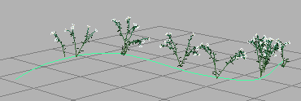
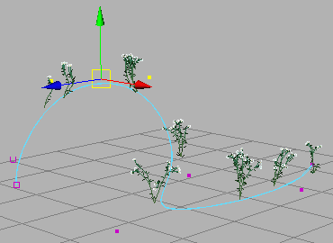
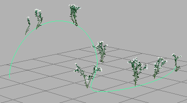

可以通过变换基础笔划路径曲线上的 CV（控制顶点）更改 Paint Effects 笔划的形状。
提示： 在更改笔划形状之前，通过简化笔划曲线来减少笔划路径曲线上的 CV 数量。有关详细信息，请参见
简化笔划路径曲线。
您不能直接修改在多边形网格上绘制的 Paint Effects 曲线的形状。但是，您可以通过选择“Paint Effects”曲线的上游 2D 曲线节点来执行基本的 CV 编辑。
更改笔划的形状
- 选择笔划。

- 显示基础笔划路径曲线（选择）。
- 选择笔划路径曲线。
- 单击鼠标右键以打开标记菜单，然后选择“控制顶点”(Control Vertex)以进入 CV 选择模式。
- 选择 CV 并使用“移动工具”(Move Tool)进行平移。

- 隐藏基础笔划路径曲线（选择）。
- 返回对象选择模式。
